|
Inicio
Bibliografía
Noticias
Hangar
Actividades
Cursos
Comisión
Fotos
Videos
Ubicación
Contáctenos
Links
|
|
Manual del Vuelo a Vela
Wolf Hirth - 1942
El vuelo
por Heinz Kensche
La evolución de los vuelos de concurso
2º Parte
por HANS JACOBS
El « Fafnir II » o « Sao Paulo » es la
continuación del «Fafnir I». Para conseguir una buena unión aerodinámica de alas y
fuselaje en el « Fafnir I », se solicitó de Muttray - Göttingen que se hiciesen investigaciones y mediciones en el
túnel aerodinámico, y a base de los resultados de estos ensayos, hizo Lippisch (DFS) el
nuevo proyecto del « Fafnir II». Las alas nacen armónicamente del fuselaje, al cual
se le dio forma como si fuese una parte del ala, y todas las secciones longitudinales del
fuselaje tienen forma de perfil de ala, calculándose sección por sección, de modo que
en la zona de unión de alas y fuselaje no resulta disminución alguna en la ley de
repartición de la sustentación a lo largo de toda el ala. En la figura se representan
algunas de las secciones del ala y las que son su continuación en el fuselaje. Lo mismo
que ocurría en el « Fafnir I », también presenta un aspecto muy agradable a la vista
el «Fafnir II» como resultado de esta nueva y perfecta idea que ha presidido los
proyectos de esos aparatos.
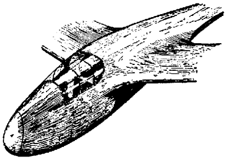
Fig. 42. Unión de
alas y fuselaje del «Fafnir II»
No hay ya
sino mencionar los otros elementos que pueden producir resistencia y que son necesarios,
como el fuselaje, para acomodación del piloto, los cuales debían contribuir también a
la sustentación ; pero aquí está esto ya de sobra conseguido con la solución ideal
dada al empalme suave y aerodinámico del fuselaje con el ala (fig. 42).
Como el «Fafnir I», el « Sao Paulo » tiene un ala en
voladizo, monolarguera, en línea débilmente quebrada y borde de ataque rígido, con el
género de construcción ya conocido, y ambas alas se empalman a la pieza central que
forma cuerpo con el fuselaje. No se dan otros detalles sobre este aparato por falta de
espacio; únicamente se dice que con él hizo Heini Dittmar, en uno de los primeros vuelos
del año 1934, la marca mundial de distancia recorriendo 370 km. (figs. 41 y 43).
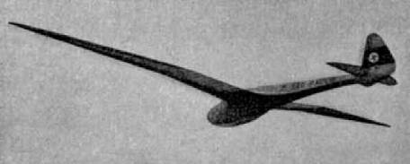
Fig. 43. « Fafnir II
» en vuelo
Con fines
de experimentación, proyectó Hans Jacobs (DFS) el hidrovelero « Seeadler », el cual no
solamente fue empleado con ese objeto, sino también fue usado por grupos de aficionados
que ya que no tuviesen aeródromo disponían de un lago apropiado en la proximidad de su
residencia o de una zona de costa, para el despegue y amaraje.
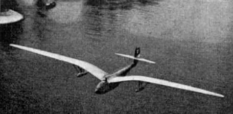
Fig. 44. Amaraje del
« Seeadler »
Este
hidrovelero puede también volarse en ascendencias orográficas o térmicas, puesto que
siendo posible aterrizar con este aparato no hay inconveniente en usarle como velero
normal disponiendo de un aeródromo o una ladera adecuada (fig. 44).
En el «Seeadler» se emplearon con ligeras modificaciones
las alas del «Rhönadler». El fuselaje se hizo de tipo de canoa y la estabilidad
transversal necesaria se aseguró con dos flotadores laterales, cuyos soportes nacen de
las aristas de los diedros del ala, sin que nos sea posible dar más detalles de
construcción de este aparato. Los vuelos de prueba fueron realizados, con éxito, en
distintas situaciones meteorológicas sobre los lagos de Chiem y de Constanza.
En el concurso del Rhön de 1934, en el que se llevaron a
cabo una serie de vuelos de distancia con viento térmico, estando entre ellos el de
Dittmar con el « Fafnir II», que fue la marca mundial, se puso de manifiesto claramente
el valor de un velero rápido para aprovechar tales situaciones meteorológicas, y así
Jacobs transformó el « Rhönbussard » en el « Rhönsperber », ya que el primero,
habiendo hecho una serie de buenos vuelos de distancia, había demostrado sus buenas
condiciones para esas situaciones meteorológicas.
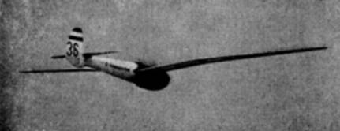
Fig. 45. El velero
«Rhönsperber».
El ala
alta del «Rhönbussard» se transformó en un ala media de dos piezas con algo más de
envergadura, conservándose la misma sección transversal de ala y parecida forma en
planta, pero, como se ve, abandonando la forma corriente de organización de los aparatos
de ala media de hacer una pieza central fija al fuselaje y las otras dos piezas extremas
empalmadas a ella. El larguero principal atraviesa los costados del fuselaje y en el
centro de éste se empalman los dos muñones de ala que resultan de esa disposición. Los
esfuerzos de torsión del ala se transmiten al fuselaje por el larguero posterior. Este
modo de construcción trae consigo una gran economía de peso, pues se evitan la mitad de
los herrajes principales, que de otra manera son necesarios, así como resultan
innecesarias otras piezas grandes de empalme. En este aparato, que como los « Rhönadler
» y « Rhönbussard » fue proyectado para la construcción en serie, se puso gran
cuidado en la cabina del piloto: el asiento es de quita y pon, lo mismo que los pedales;
todas las transmisiones de los mandos van debajo del piso, que es fijo, etc. (fig. 45).
Para aumentar la velocidad de descenso en los aterrizajes
se emplearon, por primera vez en un velero en este tipo « Rhönsperber », los alerones
interruptores sobre la cara dorsal del ala, los cuales anulan la sustentación
correspondiente a una extensa zona del ala (fig. 46), resultando una disposición
económica y de muy buena eficacia. Otras clases de estos alerones dispuestos en el borde
de ataque del ala son caros y no suficientemente eficaces, por lo que no han tenido
aceptación.
Fig. 46. Alerón
interruptor en el « Rhönsperber »
El «
Rhönsperber » fue construido en grandes series por los talleres de aviación Schweyer y
resultó un velero de concurso de poco precio. Entre muchos de los vuelos notables hechos
con él pueden citarse el de Heinemann, en 1935, de 500 km. de recorrido, y la travesía
de los Alpes hecha por Dittmar.
Por lo expuesto se ve que el « Rhönsperber » es, por su
organización y modo de ser construido, el modelo de partida de la serie de proyectos de
Jacobs, es decir, de los tipos DFS « Kranich », « Habicht » y « Sperber Junior ».
El « Kranich », velero de concurso biplaza de 18 m. de
envergadura, tiene un aspecto como si fuese una ampliación del « Rhönsperber » y se
emplea en la enseñanza de pilotos de concurso y para vuelo sin visibilidad. Además, este
tipo permite ejecutar vuelos de verificación del estado de aprendizaje de un piloto,
para lo que se presta admirablemente el « Kranich », porque, en el método corriente
seguido en la enseñanza en el que el alumno va « solo », solamente puede corregir el
profesor los defectos que resaltan mucho, lo que especialmente ocurre en la enseñanza del
vuelo con apoyo térmico y en las nubes, en donde el alumno va cientos de metros alejado
del profesor y los errores de pilotaje del alumno sólo son advertidos cuando « resbala
»; en cambio, si el profesor va con el alumno en un biplaza puede ir haciendo
verificaciones del estado de vuelo de tiempo en tiempo y corregir los defectos del alumno.
En este velero biplaza se ha empleado el ala media para
que tanto el alumno como el profesor tengan vista despejada, especialmente hacia arriba,
lo que es necesario para el vuelo térmico y no puede ser conseguido con el tipo de ala
alta, a menos que profesor y alumno vayan uno al lado del otro.
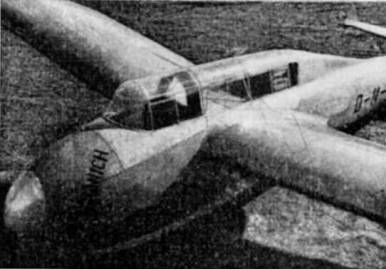
Fig. 47. El velero
biplaza « DFS Kranich », de conducción interior
En cuanto
al modo de construcción, el « Kranich » es un velero normal; las alas tienen ligera
flecha para poder disponer el piloto, que va detrás, en el centro de gravedad, de modo
que cuando vuela el aparato con sólo un tripulante no es necesario lastre. Los
semilargueros principales van empalmados en el centro del fuselaje como en el « Sperber
». El aparato puede volarse con los dos pilotos descubiertos o tapados; en este segundo
caso, la parte anterior de la tapa va provista de una cortinilla que a voluntad puede
correrse para la enseñanza del vuelo sin visibilidad. El « Kranich » ha sido muy
empleado en las escuelas, en el DFS para los fines antes citados y, además, para vuelos
de experimentación con objeto de probar instrumentos o bien para observaciones
meteorológicas. Las características de este aparato son suficientes para realizar con
él vuelos de gran distancia (fig. 47).
En 1938 se emprendieron con este «DFS-Kranich» una serie
de vuelos de distancia, de los cuales varios pasaron de los 400 km.; en Rossitten se
estableció una marca de duración en biplaza de 50,50 horas; en Grunau una nueva marca de
altura, con monoplaza, empleando la respiración con oxígeno y alcanzando los 8600 m.,
y el piloto Huth llevó a cabo con él el vuelo con objetivo fijado y regreso al punto de
salida, Hamburgo-Hannover-Hamburgo.
Los tres vuelos han sido reconocidos como de marca por la
FAI.
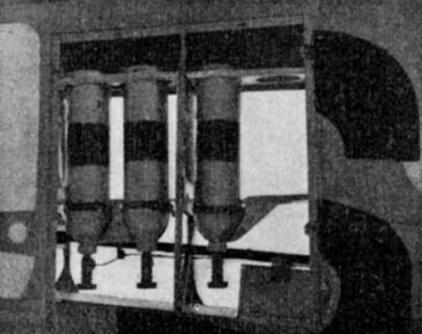
Fig. 48. Instalación
de botellas de oxígeno dentro del ala del velero « DFS-Kranich »
Puesto que
para los vuelos de altura es necesaria la respiración con oxigeno, se dispuso en el ala
el alojamiento necesario para las botellas de oxigeno que llevan provisión para cuatro
horas de vuelo (fig. 48).
Un aparato especial que sólo mencionaremos es el «
Sperber Junior », que fue hecho a propósito para la conocida piloto Hanna Reitsch,
derivado del « Sperber »; la envergadura se elevó de 15,3 m. a 16 m. y el fuselaje se
hizo a la medida de Hanna, con lo que resultó de pequeña sección transversal. En el «
Sperber Junior » se estudiaron una serie de problemas de forma, como, por ejemplo, la
magnitud de los diedros de la línea del ala, unión al fuselaje, eficacia del timón de
dirección, las cuales tuvieron luego aplicación en el aparato «Reiher», cuyo proyecto,
ejecutado por el DFS, fue deducido en parte de esas experiencias (fig. 49).
Debido por una parte a la perfección aerodinámica de los
veleros y por otra a los vuelos que cada vez más eran ejecutados en nubes, los aparatos,
a consecuencia de errores en el pilotaje, llegaban a estar en situaciones de velocidad
para las cuales la resistencia mecánica de los veleros no había sido aumentada en
proporción, así que empezaron a sucederse las roturas en el aire de alas y de fuselaje.
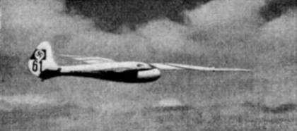
Fig. 49. El «Sperber
Junior», para la capitana aviadora Hanna Reitsch
Dadas las
grandes envergaduras en uso, la elevación de la resistencia que resultaba necesaria
habría dado lugar al consiguiente aumento de peso que no podía tolerarse; por lo tanto,
el aumento de la seguridad del vuelo solamente podía ser conseguido con un nuevo órgano
tal, que si se llegaba a una situación de vuelo sobre la que el piloto no tuviese acción
ese órgano aumentase la resistencia del aire lo necesario para impedir que se llegase a
velocidades críticas; este órgano, además, había de ser maniobrable a voluntad del
piloto.
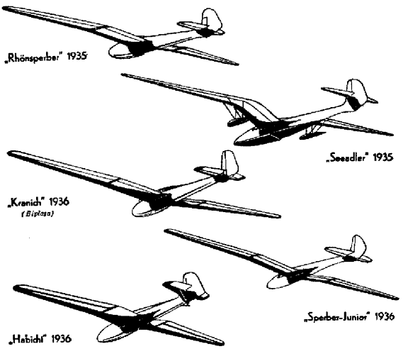
Fig. 50. Veleros de la
época 1935 a 1936
Los
ensayos hechos con los alerones interruptores del «Sperber» pusieron de manifiesto un
importante aumento de la resistencia, y basándose en estos ensayos se construyeron los
frenos que se ven en la figura 46, los cuales se disponen en ambas alas en sus dos caras
superior e inferior y pueden ser maniobrados por el piloto. La velocidad límite de un
velero de concurso, es decir, la velocidad que se llegaría a alcanzar en un descenso
desbocado, está en los 400 a 500 Km./hora, según el grado de bondad aerodinámica del
aparato. Al emplear los frenos, que elevan notablemente la resistencia, la velocidad
máxima del aparato cae a los 200 Km./hora. Si el piloto conoce que su avión llega a un
estado de vuelo en el que ha perdido los mandos, le basta maniobrar los frenos para tener
la seguridad de que el aparato no pasa de los 200 Km./hora y, por lo tanto, no puede temer
su rotura en el aire. Además, estos frenos representan un medio eficaz para los
aterrizajes forzados, puesto que con ellos se eleva la velocidad de descenso hasta los 3
ó 4 m/seg., así que son posibles los aterrizajes en los lugares más reducidos. Los
frenos de aire, marca DFS, proyectados por Jacobs, que pueden ser empleados en cualquier
velero, se construyeron en serie para montarlos en los tipos « Rhönadler », «
Rhönbussard », « Minimoa », « Rhönsperber », etc.
En el concurso del Rhön fueron empleados con profusión,
por primera vez, veleros provistos de los frenos DFS. Los veleros se elevaron en las
potentes nubes tormentosas que se extienden hasta las alturas de los 10 000 m. y provistos
de los frenos pudieron abandonar las nubes sin otros daños que los timones agujereados
por el granizo, mientras que otros veleros sin frenos fueron desorganizados por los
esfuerzos excesivos a que estuvieron sometidos. Este concurso puso de manifiesto la gran
seguridad que se había alcanzado en los veleros con el empleo de los frenos para los
casos de vuelo desbocado, y actualmente es obligatorio que los veleros que se construyan
vayan provistos de tales órganos. Los frenos DFS fueron después perfeccionados y
simplificados por empresas particulares, entre las que son de citar el sistema S-H, que
construyó la casa Hütter Hermanos, proyectado por la oficina Schempp-Hirth.
Al perfeccionarse la habilidad de los pilotos se practicó
cada vez más el vuelo acrobático con veleros, especialmente a partir de 1931-1932, y no
fue peligroso mientras lo ejecutaron pilotos que tenían el necesario sentimiento del aire
y la necesaria habilidad, limitándose, por otra parte, a rizos, vueltas de Immelmann y
barrenas. Sin embargo, pronto empezaron en muchos lugares los vuelos acrobáticos hechos
por pilotos con poca experiencia, especialmente las acrobacias como los rizos en picado,
toneles, vuelo invertido, etc., que siempre que se intentan llevan envuelto en si el
peligro de las grandes velocidades. Y con ello nacían esfuerzos para los que los veleros
no estaban preparados. Los accidentes que se produjeron con frecuencia hicieron necesario
prohibir en general los vuelos acrobáticos con veleros, hasta tanto que se construyesen
aparatos con la resistencia suficiente.
El DFS tomó a su cargo el problema de idear un velero de
acrobacia que por una parte permitiese la ejecución de cualquiera de las figuras
acrobáticas y que por otra no estuviese tan especializada su organización que no se
pudiese intentar con él los vuelos ordinarios de concurso; además de que el tipo deseado
había de tener las características necesarias para llegar al vuelo acrobático, ganando
la altura precisa para su realización por medio del vuelo térmico o de apoyo en nubes
(En el DFS, que ha sido visitado muchas veces por el que esto escribe y ha asistido a su
evolución, en su última visita en mayo de 1936, tuvo ocasión de ver el procedimiento
empleado para llegar al conocimiento de las bases de calculo de los aviones de acrobacia.
Como ya se ha indicado en el texto, la cuestión es
conocer la aceleración a que puede estar sometido el aparato en la ejecución de
figuras de vuelo para saber el factor de multiplicación de pesos que da la pauta para los
esfuerzos que ha de sufrir el avión, y así si esa aceleración es, por ejemplo, cuatro
veces la de la gravedad normal, el esfuerzo del avión es como si fuese de un material
cuyo peso se hubiese cuadruplicado.
A este efecto, mediante dos teodolitos cinematográficos
separados por una base estereoscópica conveniente, se obtienen las fotografías de un
velero durante la ejecución de una acrobacia. De estas fotografías se deduce la
trayectoria seguida por cada punto del avión, limitándose, en general, al centro de
gravedad, los extremos de proa y popa y las puntas de las alas. Como los teodolitos llevan
cronógrafo, se saben los instantes en que cada punto ocupa una cierta posición. Con ello
se deduce la velocidad de cada punto y, por lo tanto, la aceleración y se tienen los
elementos que son necesarios.
En dibujos de gran tamaño puestos como láminas en las
paredes del laboratorio se veían las curvas correspondientes al movimiento del aparato,
en planta, en un plano vertical longitudinal y en otro transversal; a partir de estos
estudios es posible dar dimensiones completamente estrictas a los diversos elementos de un
aparato, que resultará de la resistencia necesaria, pero sin pesar un gramo más de lo
debido. - N. del T.).
El « Habicht » es un monoplano de ala media de 13,6 m.
de envergadura y fue calculado con estricta sujeción a los pliegos de condiciones
facultativas existentes. El aspecto de este aparato a los ojos de un experto indica,
desde luego, la finalidad con la que ha sido construido. Todos los timones son
compensados, tanto desde el punto de vista del peso como aerodinámicamente, puesto que
están previstos para vuelos en picado a 420 km/hora. En este proyecto se presentaba de
nuevo el problema de las presiones en timones, que habían de poder ser maniobrados sin
inconveniente por el piloto y que por una parte habían de acomodarse a la velocidad
normal de vuelo de 60 km/hora, teniendo en ella la eficacia necesaria, y por otra parte
habían de servir también en el vuelo acrobático con las velocidades en él alcanzadas
de 180 km/hora. El entrar en más detalles sobre este aparato nos llevaría demasiado
lejos; basta decir que para llegar a esté modelo fueron necesarios cálculos muy extensos
y complicados sobre su resistencia, como también numerosos ensayos de materiales, con lo
que se llegó a dar las dimensiones precisas a todos los elementos del avión, en vista de
los esfuerzos a que habían de hallarse sometidos.
El « Habicht » satisfizo todas las esperanzas que en él
se habían puesto; tonel, barrena horizontal, rizo picado, todas estas acrobacias pudieron
hacerse sin inconveniente; asimismo las características fueron satisfactorias,
correspondiendo, poco más o menos, a las del « Rhönbussard ».
El velero de concurso « Merlin » fue proyectado como continuación del biplaza «
Milán» « Mü 10» y construido por el Akaflieg de Munich bajo la dirección de Egon
Scheibe. Una reforma del « Merlin », que suponía pequeñas modificaciones, dio lugar al
aparato de nombre «Atlante», que fue volado en el concurso del Rhön de 1936, con gran
éxito, por Kurt Schmidt, quién tomó mucha parte en su construcción.
El «Merlin» es un monoplano de ala alta, con ala recta
en dos piezas, monolarguera y borde de ataque rígido a la torsión. Alas
y empenaje son de madera; fuselaje y
alerones son de tubo de acero y van entelados; se
dio mucha importancia a la cuestión de un montaje rápido y sencillo y, como en el «Mü
10», las dos piezas de las alas no eran simétricas.
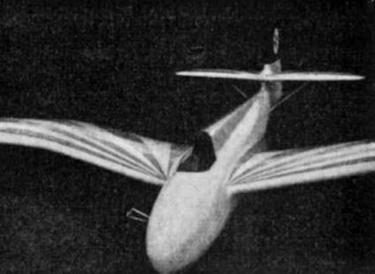
Fig. 51. Velero para
vuelo acrobático « DF5-Habicht »
El montaje
se hacia empezando por el ala derecha, que era la mayor, y se empalmaba al fuselaje por
tres puntos; el ala izquierda se acoplaba a la derecha por el larguero principal,
enlazándose al fuselaje sólo por el falso larguero.
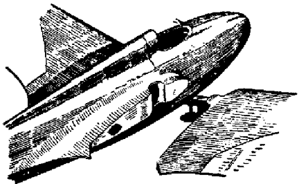
Fig. 52. Unión de las alas al fuselaje en el
velero para acrobacia «Habicht»
El
acoplamiento de los dos elementos del larguero principal se hacia mediante la acción de
una pequeña palanca que simultáneamente empalmaba los dos pernos de unión. El timón de
altura se fijaba también sólo mediante una tuerca (figs. 53 y 54).
Los alerones de mando, como los alerones de reglaje que
van en el borde de salida del ala, pueden maniobrarse para aumentar la sustentación y
conseguir, con ello, menor velocidad de vuelo, lo que es conveniente para aprovechar los
térmicos pequeños o las ascendencias orográficas estrechas. La cámara del piloto está
organizada como se ve en la figura 53, y para facilitar el despegue, el aparato va
provisto de un tren de aterrizaje arrojable. Al proyectar el « Merlin » se tuvo en
cuenta la posibilidad de montar un motor, de modo que más tarde pudo transformarse en
motovelero.
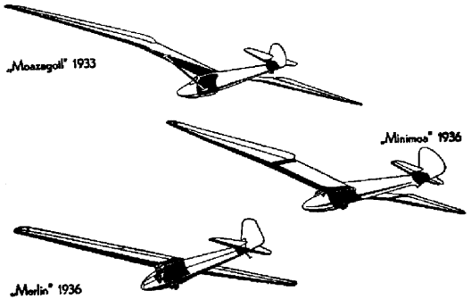
Fig. 53. Veleros de
1933 y 1936
El
«Minimoa» de Wolf Hirth fue construido en colaboración con los talleres Göppingen y su
forma definitiva se alcanzó después de un largo proceso. El aspecto de este aparato es
el de un «Moazagotl» más pequeño y, como en éste, se obtuvo con él una buena
estabilidad en las curvas, y de ruta y longitudinal, gracias a la línea del ala
fuertemente quebrada y a la torsión en la zona de las aristas de los diedros. Los
alerones tienen una disposición especial en planta, pues no forman parte del contorno
general de las alas, como es lo corriente, sino que sobresalen de ella hacia atrás, con
la consiguiente discontinuidad en el valor de la profundidad del ala. Mediante esta
organización de los alerones, se consigue un notable aumento sin transiciones de la
profundidad del ala, ya que se evita la ranura que se produce con la disposición normal
en el momento de maniobrar el alerón. Las partes exteriores de las alas tienen un alabeo,
respecto a las zonas interiores, de 2º negativos,
con el fin de evitar una discontinuidad en la distribución de la sustentación.
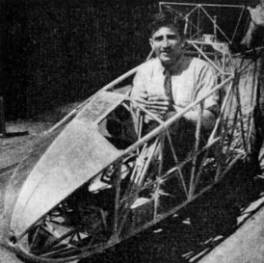
Fig. 54. Asiento del
piloto del «Merlin»: el que lo ocupa es
Kurt Schmidt
El primer
modelo del «Minimoa» fue construido de ala alta y el campo de vista, del piloto, que
sólo tenía la cabeza sobresaliendo del ala, no era satisfactorio, por lo que luego se
hizo con el ala más baja pasándose al tipo de ala media. El «Minimoa» tenía, como
medio auxiliar de aterrizaje, alerones de ese nombre en la zona interior de las alas, es
decir, los alerones dichos van en la cara inferior del borde de salida y pueden ser
maniobrados por el piloto mediante una palanca. Estos alerones de aterrizaje, que son
corrientes en los aviones ordinarios de motor, no producen aquí el efecto deseado, puesto
que tales alerones aumentan la sustentación en lugar de disminuirla, y con ello no se
evita suficientemente lo que ahora quiere evitarse, que es estar mucho tiempo cerniéndose
sobre el lugar de aterrizaje que se supone ser reducido. Por eso, más tarde se montaron
alerones interruptores normales como los del « Sperber ». Lleva, además, una rueda
central, que puede ser frenada por el piloto, para facilitar el envuelo, especialmente en
el caso de emplear el remolque por avión (fig. 65).
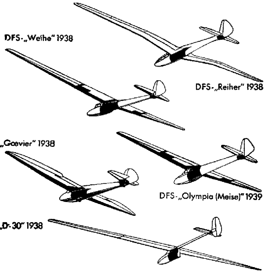
Fig. 55. Conjunto de
tipos de velero, DFS-«Reiher», DFS-« Weihe », DFS-« Olimpia » (Meise) y « Goevier
D-30 »
Las alas
del « Minimoa » están calculadas para poder montar un fuselaje biplaza en lugar de uno
monoplaza; además, pueden también montarse sobre un fuselaje con motor para transformar
el aparato en motovelero. Estas posibilidades amplían mucho los modos de empleo de las
alas del «Minimoa».
Los años 1937 y 1938 trajeron muchas novedades
interesantes, entre las cuales las más notables fueron los veleros « D-30 », del grupo
de la Escuela Superior Técnica de Darmstadt y el « Reiher », del DFS.
Ambos tipos tenían como objeto principal elevar las
características de los veleros, lo que se consiguió en gran escala; la velocidad de
descenso era de 60 cm/seg., y el coeficiente de planeo tenía el valor de 1: 32, que,
según el cálculo, el del « D-30 » debía ser de 1: 35. Sin embargo, se diferencian
ambos veleros esencialmente en el modo como se han resuelto en ellos los problemas
planteados. El « Reiher », debía poder ser empleado bajo cualquiera de los aspectos del
vuelo a vela, a pesar de la elevación de sus características y también debía prestarse
a ser construido en serie, aunque hubiese de ser poco numerosa. El « D-30 », con su ala
metálica extremadamente delgada, es un tipo para ser construido como único ejemplar de
experimentación, y, como las exigencias de rigidez podrían ser sobrepasadas, sólo con
cierta limitación podía ser empleado para vuelos en nubes. Sin embargo, el «D-30»
enseñó al constructor que las características pueden ser mejoradas, si se resuelven los
problemas de resistencia y rigidez que figuran en el primer plano del cálculo de los
veleros modernos, por un modo de construcción adecuado y una elección acertada de los
materiales que han de ser empleados. Lo difícil del problema se ve en el hecho de que la
relación entre la altura del larguero en la raíz del ala y la semienvergadura era de 1:
40 en el año 1927, y actualmente esa relación ha llegado a ser de 1: 70. La forma del
larguero, en ambos modelos de velero, indica la solución que debe darse a la cuestión:
largueros anchos de madera escogida o de metal.
El «D-30», del grupo de Darmstadt (fig. 56), fue
concebido para alcanzar el mejor ángulo de planeo posible y la menor velocidad de
descenso, sin atender para nada al coste de la construcción y medios empleados. De un
extremo, representado por un aparato de 12 m. de envergadura, 12 m.2 de
superficie con 63 kg. de peso equipado, pequeña velocidad de descenso y gran facilidad de
virar, se pasó al otro extremo: construir un avión que, con la misma superficie, tenía
20,1 m. de envergadura y un alargamiento de 33. El aspecto era parecido al del
«Austria»: ala alta en voladizo, con fuselaje de canoa y, para soportar los empenajes,
un tubo de electrón empalmado con roblones (Electrón es el nombre, de una de las
llamadas aleaciones ligeras usadas tanto en la aviación; está formada por magnesio en la
proporción de 90 a 99 % con aluminio, manganeso, zinc y cadmio; sorprende tomar en la
mano una pieza que, con aspecto metálico, parece ha de tener el peso ordinario de los
hierros y aceros y se encuentra pesar tan poco: su peso especifico es de 1,74 a 1,84,
mientras que en los hierros y aceros es ese peso 7 a 8. A título de curiosidad, se dirá
que con el nombre de electrón se conocía en la Antigüedad una aleación natural de oro
y plata que, según la tradición numismática, fue con lo que se acuñaron en Lidia las
primeras monedas de la Humanidad por el año 700 a. de J. C. Esta aleación la había
también en los yacimientos de la España primitiva. - N. del T.). El trabajo
principal había de referirse al larguero, cuya construcción fue objeto de muchos ensayos
y trabajos, atendiendo a que, con una sección de 15 cm. de altura sobre el fuselaje,
tiene un voladizo de 10 m.; así pues, los esfuerzos de flexión y torsión resultan
soportados por un larguero, en cajón doble, con tres almas, revestimiento resistente
arriostrado por tacos, siendo el material dural roblonado. El borde de ataque, que no
participa en la resistencia, recibe su forma por el costillaje y lleva el correspondiente
revestimiento. Todo el borde de salida del ala, que lleva alerones de mando y auxiliares,
puede maniobrarse hacia abajo para el aterrizaje y el vuelo lento, y además el aterrizaje
forzado se facilita por medio de alerones interruptores, que van en el trasdós del ala.
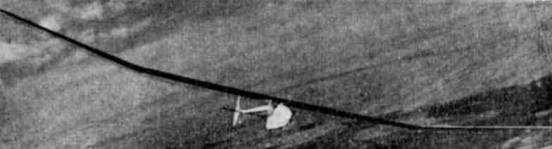
Fig. 56. El «D-30»
del Grupo de vuelo de los alumnos de Técnica de Darmstadt. Las alas van levantadas por
sus extremos
Las zonas
extremas de las alas pueden ser levantadas en vuelo 10º y dobladas hacia abajo 2,50
grados, cuya organización fue dispuesta así para, por una parte, poder hacer ensayos de
estabilidad y mando transversal con diferentes grados de forma en V y, por otra parte,
garantizar los aterrizajes en malos terrenos haciendo las alas flexibles. El
fuselaje-canoa es de construcción normal con formeros
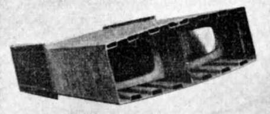
Fig. 57. Larguero de
dural del « D-30 »
y
revestimiento de contrachapado y va provisto de patines con neumáticos de
amortiguamiento. En lugar de la popa ordinaria de los fuselajes, se dispuso un soporte
roblonado de electrón, con el fin de mejorar las características con un mínimo de
superficie resistente al aire. Larguero y demás elementos del timón de dirección son de
madera, y además el timón lleva un plano de deriva con movimiento arrastrado del timón.
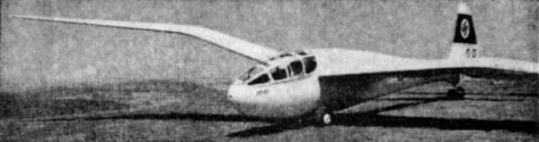
Fig. 58.
Velero de concurso « DFS-Reiher »
La
capacidad de conseguir vuelos de marca con el « D-30 » fue puesta de manifiesto por
Flinsch en su vuelo Bremen – Lübeck - Bremen, que fue marca mundial.
En el proyecto del « DFS-Reiher » (fig. 58) se
consiguió la elevación de las características por el empleo de perfiles delgados;
disminución de la resistencia perjudicial alisando los revestimientos; haciendo
interiores todas las transmisiones de los mandos; bordes de salida finos y pequeña
sección transversal de fuselaje. El « Reiher » va provisto de frenos sistema DFS y es
un monoplano de ala media, mono-larguera y borde de ataque rígido a la torsión. Todos
los empalmes para el mando transversal, los alerones de aterrizaje y los alerones de
frenado son automáticos y quedan hechos al montar el ala en el fuselaje. El empalme de
las alas se hace por tres ganchos de mano, e igualmente el montaje del timón de altura se
hace con pocos herrajes. Se dio mucha importancia a conseguir un montaje sencillo y
rápido, ya que se pensó que fuese un aparato adecuado para concursos.
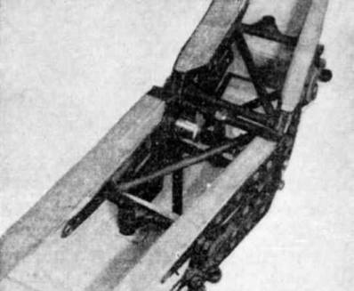
Fig. 59. Larguero del
velero « DFS-Reiher » con el herraje principal
El
larguero principal es delgado, con una altura, en el arranque, de 188 mm. y está
construido por el sistema de cajón con tacos de figura de costilla (fig. 59),
empleándose el pino como material de construcción. Todos los problemas de
características, propiedades de vuelo y los del caso sin visibilidad que fueron
planteados con este aparato quedaron ampliamente resueltos. Späte llegó a los 7800 m. en
una torre de tormenta. La capitana aviadora Hanna Reitsch ganó con el « DFS-Reiher » el concurso de vuelo con objetivo
fijado del NSFK, volando de Sylt a Breslau, y Späte ganó el concurso de 1938.
Como interesante tentativa para elevar las
características de los veleros disminuyendo la sección transversal del fuselaje, puede
citarse el aparato del grupo de los técnicos de Stuttgart, en el que el piloto va tendido
(fig. 60).
En el concurso del Rhön de 1938 participaron los aviones
sin cola de Horten Hermanos, que se ven en la figura 61, además de una serie de nuevos
modelos de los grupos de técnicos especialistas en aviación y de la industria. Los
aparatos se distinguieron por la ejecución de muchos y preciosos vuelos sin visibilidad,
hasta más de 8000 m. de altura en las torres de las tormentas.
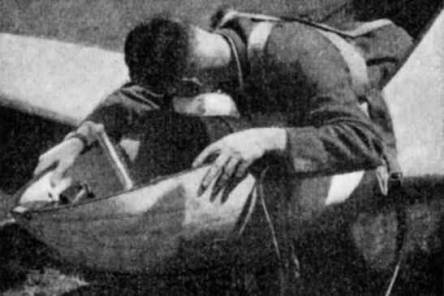
Fig. 60. Velero del
Grupo de especialitas y técnicos de aviación de Stuttgart,
en el que el piloto va tendido
Detenerse
en describir todos los aparatos de los grupos de especialistas nos llevaría demasiado
lejos; estos grupos trataron de conseguir gran velocidad de crucero y, sin embargo, poca
velocidad de vuelo al virar en las ascendencias, organizando sus veleros con carga
superficial grande y alas provistas de alerones auxiliares.
El DFS proyectó para la construcción en serie económica el « Weihe », que se parece
en su aspecto al « Rhönadler » y hasta puede sustituirle. En este aparato se utilizaron
todas las experiencias recogidas del « DFS-Reiher » de modo que resultase un buen velero
de concurso y, no obstante, sencillo y económico; fue construido en serie por los
talleres de aviación Schweyer, de Ludwigshafen (fig. 62).
En el mismo año y por los talleres Schempp-Hirth, de
Göppingen, fue construido un velero biplaza de entrenamiento que se llamó « Göppingen
4 », para el NSFK (fig. 63).
El « Goevier » parece, en su aspecto, a un pequeño y
comprimido « Minimoa », y también su construcción es parecida a la de éste. Las alas,
por razones de construcción, no eran quebradas y los pilotos van sentados uno al lado del
otro.
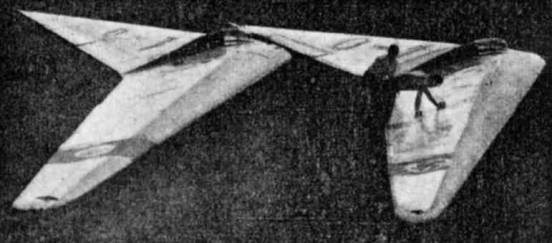
Fig. 61. Los veleros
sin cola de los hermanos Horten, en el concurso del Rhön de 1938
El año
1939 empezó para el vuelo sin motor con un concurso de aparatos en Roma.
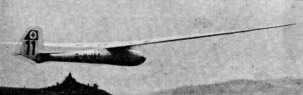
Fig. 62. Velero de
concurso « DFS-Weihe »
En los
juegos olímpicos de 1940 en Finlandia se admitía, por primera vez, como modo de lucha,
el vuelo a vela, y para poder disponer de un aparato adecuado y que fuese el mismo que
usasen todos los participantes en el concurso, se proyectó un velero olímpico, es decir,
se tomó una medida análoga a la adoptada para las yolas veleras. La FAI dio las
prescripciones sobre pliegos de condiciones de resistencia, peso máximo del equipo,
mínima anchura de fuselaje y envergadura de 15 m. En ese concurso de aparatos
participaron: Alemania con dos, Italia con dos y Polonia con uno.
Fig. 63. En el «
Goevier» los pilotos van uno al lado del otro
Los vuelos que habían de servir para la elección se hicieron en
Roma volando todos los aparatos seis pilotos de diferentes naciones para apreciar sus
cualidades de vuelo.
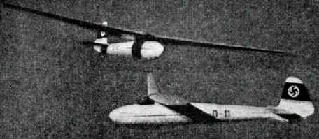
Fig. 64. El velero para los Juegos Olímpicos « DFS-Olympia »
(Meise)
Con estos juicios y el examen de
las condiciones constructivas de los veleros realizó la elección la comisión técnica
internacional nombrada por la FAI, la cual, por una franca mayoría, hizo
recaer la decisión sobre el velero proyectado por el Instituto alemán de
experimentación para el vuelo a vela (DFS): el velero « Meise», hoy « DFS-Olympia »
(fig. 64).
Los primeros Juegos Olímpicos con velero serán llevados a cabo en un velero alemán.
Bajo los auspicios de la Olimpíada, este velero fue usado por muchas naciones como velero
de concurso, puesto que los planos fueron facilitados por Alemania, libres de gastos, a
todos los países que habían de tomar parte en la Olimpiada.
Los dos puntos de vista que se tuvieron presentes en la
construcción del « DFS-Olympia » fueron: posibilidad de empleo con cualquier situación
meteorológica y organización sencilla para poder ser reproducido hasta en los pequeños
países sin industria propia. Estos dos puntos de vista se tuvieron en cuenta, tanto al
hacer el proyecto como al hacer la construcción. En la organización se parece este
aparato al « DFS-Weihe », y en Alemania sustituyó al « Rhönbussard », que en los
últimos años había sido abandonado.
Si se da una ojeada que abarque todo el tiempo que
comprende la evolución total de los veleros, empezando por los precursores, fijando la
atención desde ciertos puntos de vista, es posible reconocer algunas líneas directrices
en esa evolución. Sin embargo, es claro que, dada la multiplicidad de los tipos alemanes
de veleros, resultan cortadas algunas fases y aun hoy no es posible resumir en pocas
palabras una determinada directriz.
En el principio de la evolución, en cuanto se marcó
claramente una fórmula mecánica del vuelo sin motor, el objetivo principal de un
proyecto de aparato era llegar a conseguir una pequeña velocidad de descenso; después,
con las exigencias planteadas en los concursos de llegar a grandes vuelos de distancia,
pasó al primer plano de los objetivos el conseguir una mejora del ángulo de planeo. Como
representante de esta directriz de la evolución, puede citarse el « Konsul », aparecido
en 1923. Esta fase duró hasta 1930. Los « Darmstadt I » y « Darmstadt II »
representan el aumento de la envergadura, concretada en el paso hacia el « Wien » y el « Fafnir I».
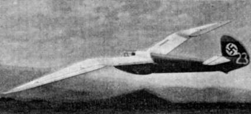
Fig. 65. El
«Minimoa» en el aire
Simultáneamente,
en 1930 fue abordada por Kronfeld, en una conferencia, la cuestión de las propiedades de
vuelo de los veleros. La necesidad de buenas propiedades de vuelo, que empezó a sentirse
al aparecer la técnica del vuelo en nube, se hizo cada vez más imperiosa; el piloto, que
está ya recargado de trabajo en los vuelos de distancia y en nubes, necesita un alivio en
la actividad de simple piloto demasiado ocupado en el mando de equilibrio. Si la
estabilidad transversal no es grande, especialmente con el aparato encabritado, y si el
timón de altura es demasiado sensible, se requieren gran atención y cuidado del piloto,
y esto ocurría en casi todos los veleros construidos hasta entonces.
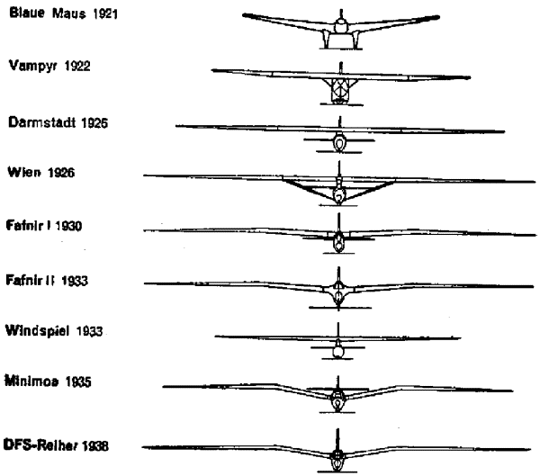
Fig. 66. Evolución del velero de concurso desde 1921 hasta
1938
Después,
los vuelos de distancia, cada vez más largos, renovaron las exigencias en cuanto a
características, y principalmente en la cuestión de separación de velocidades,
especialmente necesaria para los vuelos en viento térmico que se verificaron en los
concursos de 1934 y 1935. Es decir, las necesidades eran: buen ángulo de planeo con
pequeña y grande velocidades de vuelo, y buena estabilidad.
Sin embargo, las experiencias del concurso de 1936,
intentando aprovechar los térmicos muy débiles, pusieron otra vez sobre el tapete la
cuestión de pequeñas velocidades de descenso y de vuelo, sin que, por eso, se hubiese de
prescindir de las otras condiciones ya expuestas.
El momento actual representa, con toda su dificultad, el
compromiso entre esas exigencias, que son contradictorias, así que la resolución del
problema sólo podrá conseguirse echando mano de todos los recursos de la ciencia y de la
técnica del día, sin consideración a los gastos que puedan resultar.
El constructor, por lo tanto, deberá distinguir, hoy más
que antes, en los proyectos, entre el velero para uso general que pueda ser reproducido y
tipos análogos y el velero de concurso para satisfacer las más elevadas exigencias. Lo
que no parece adecuado es la distinción entre veleros para distintas situaciones
meteorológicas, puesto que en un mismo vuelo pueden presentarse todas las imaginables.
Las necesidades, en cuanto a características, exigen
aumento de la envergadura, pero retrocediendo en el aspecto de una extrema facilidad de
virar (vuelo en térmicos), así que hoy se viene a concluir, teniendo en cuenta los
diversos puntos de vista, en un valor medio de la envergadura, entre los 17-19 m.
En cuanto a la cuestión de forma, que desde luego tomó la
dirección de mayor finura aerodinámica, como el pasar del fuselaje poligonal al ovalado,
revestimiento del alojamiento del piloto, etc., presenta novedades radicales desde que se puso en juego la cuestión de
la mejora de las propiedades de vuelo.
Cuidadosa atención en la forma de las zonas extremas de
las alas; buen perfil, pequeña curvatura en la zona de los alerones.
Alerones de mucha profundidad, especialmente en sus
puntas.
Alabeo suficiente de las zonas exteriores de las alas.
Alas quebradas (mejora de la estabilidad lateral, como con
las alas del «Fafnir I»).
El estado actual de la cuestión se caracteriza por una
determinación cuidadosa de la forma en planta de las alas (apuntadas) y buena
repartición de la profundidad y del alabeo.
La directriz seguida hoy marca una serie de detalles muy
interesantes que resultan de las razones que se consideran como fundamentales. Por
ejemplo, la evolución de los perfiles empezó en los monoplanos en voladizo con perfiles
de mucha curvatura y gruesos, para conseguir un valor grande de Ca
max, para ser sustituidos después, durante
muchos años, por un perfil de espesor y curvatura medios, tal como el « Gotinga 535 »,
el cual representaba una elevación de las suficientes exigencias técnicas, hasta que se
presentó la necesidad de mayor separación de velocidades, por lo que duró su empleo
hasta los últimos años.
Las nuevas directrices marcan, todavía más, la tendencia
hacia perfiles delgados y disminución de la curvatura hasta llegar a perfiles con
intradós convexo.
Paralelamente a los nuevos puntos de vista sobre las
características y las propiedades de vuelo, aparece, en los últimos años, con toda
intensidad, la cuestión de elevar el grado de seguridad del vuelo. Tren de aterrizaje
fijo o eclipsable, alerones interruptores en las alas (« Rhönsperber ») para
facilitar el aterrizaje; frenos DFS para la seguridad del vuelo en nubes; herrajes de
seguridad suficiente para el acoplamiento en el vuelo remolcado, etc.
Los años 1937 y 1938 han demostrado que aun no está
cerrado el ciclo de la evolución de los veleros. Las cifras representativas de las
características hacen ver claramente los términos del progreso en 1934 el mejor
coeficiente de planeo era el del « Fafnir II », con el valor 1: 28; en 1938 tenía el «
DFS-Reiher », 1 : 32; el del « D-30 » era todavía mayor. La velocidad de descenso se
mejoró hasta llegar a valores inferiores a los 60 cm/seg. Los veleros de concurso, que
hoy se construyen en serie, tienen un ángulo de planeo que es el de los mejores veleros
de experimentación de los primeros años. Y con la mejora de características se
mejoraron todavía, en mayor proporción, las propiedades de vuelo, siendo oportuno decir
aquí que, a pesar de estas mejoras, los gastos de construcción en serie de alguno de los
tipos de velero resultan disminuidos. Los ensayos de veleros para la Olimpíada que se
hicieron en Roma, pusieron de manifiesto el grado de adelanto de la construcción de
veleros de concurso en Alemania. Sin embargo, hay que esperar que este avance no se
continúe en algunos años, pues, en el vuelo a vela no hay la posibilidad que existe en
la aviación ordinaria de motor, que es reforzar el manantial de energía. El manantial de
energía es aquí el océano aéreo y este manantial nos es dado; no podemos hacer más
que aprovecharle mejor, pero no reforzarle.
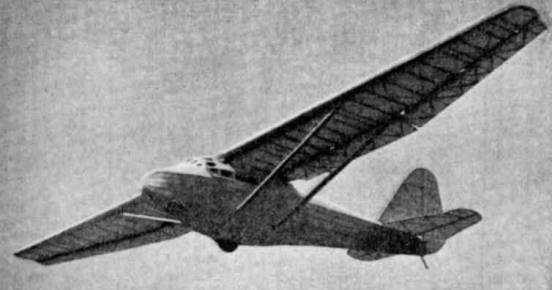
Fig. 67. Los veleros
multiplazas fueron ensayados en los primeros tiempos del vuelo a vela. Así, A. Fokker, en
1922, estableció en la Wasserkuppe una marca de duración en biplaza de 13 min. Para
escuela, se utilizó con éxito el « Margarete », del grupo de Darmstadt. También son
conocidos: el « Liegnitz », de Sailer, con
el que hizo algunos vuelos de marca Ferd. Schulz; el biplaza de tubo de acero construido
por Kreckel, en Mecklemburgo; el « Poppenhausen
», de Schleicher, así como los primeros tipos biplazas el Rhönadler; el « Herkules »
de Kassel, y en 1932, el « Grunau
8 ». Como biplazas de concurso, tenemos recientemente el afamado « Milan », de Scheibe (Munich) y el « Kranich», de Jacobs. También hay que citar
aquí un velero de cuatro plazas, el cual ha proyectado y construido en los Estados
Unidos, Franz Gross
APARATO
|
CONSTRUCTOR
|
Enverga-dura
m. |
Superficie
de ala: m2 |
Alarga-
miento |
Peso en vuelo: Kg. |
Carga Superfi-cial:
Kg./m2 |
Perfil
|
Año
|
Blaue Maus |
D. mg. Klemperer |
9,7 |
15,5 |
5,8 |
128 |
8,8 |
Gö 422 |
1921 |
Vampyr |
Akafl. Hannover |
12,5 |
18 |
10,8 |
210 |
13,1 |
Gö 482 |
1922 |
Greif |
Akafl. Hannover |
11,6 |
15 |
9 |
176,4 |
11,8 |
Gö 449 |
1922 |
Edith |
Akafl. Darmstadt |
12,6 |
15 |
10,6 |
160 |
10,7 |
Gö 426 |
1922 |
Geheimrat |
Akafl. Darmstadt |
12,1 |
14,3 |
10,2 |
160 |
11,6 |
|
1922 |
Konsul |
Akafl. Darmstadt |
18,7 |
22 |
18 |
200 |
9,1 |
Gö 535 |
1923 |
Darmstadt II |
Akafl. Darmstadt |
18 |
16,9 |
19,4 |
250 |
14,8 |
Joukowsky espesor medio |
1928 |
Kakadu |
Akafl. München |
19,2 |
17,6 |
21 |
258,6 |
14,7 |
Gö 652 |
1928 |
Professor |
DFS Lippisch |
16,1 |
18,6 |
14 |
246 |
13 |
Gö 549 |
1928 |
Wien |
DFS Lippisch |
19,1 |
18,6 |
20 |
248 |
13,8 |
Gö 549 modificado |
1929 |
Fafnir I |
DFS Lippisch |
19 |
18,6 |
19,4 |
315 |
16,9 |
Gö 652-535 |
1930 |
Fafnir II |
DFS Lippisch |
19 |
19 |
19 |
375 |
19,7 |
Proyec.
D.F.S. |
1933 |
MS II |
Mayer-Aachen |
20 |
20 |
20 |
272 |
13,6 |
Gö 535 |
1930 |
Austria Ku 4 |
Kupper |
30 |
34,97 |
25,7 |
482,4 |
13,8 |
Gö 652 |
1930 |
Kassel 25 |
Fieseler |
18 |
15,5 |
16,8 |
217 |
14 |
|
1931 |
Rhönadler |
Jacobs |
17,4 |
18 |
20,9 |
260 |
14,4 |
Proyecto
de Gö 652 |
1932 |
Condor II |
Krämer-Dittmar |
17,24 |
16,2 |
18,4 |
320 |
19,75 |
Gö 532 |
1935 |
Windspiel |
Akafl. Darmstadt |
12 |
11,4 |
12,6 |
144 |
12,6 |
Gö 535 |
1933 |
DFS-Rhönbussard |
Jacobs |
14,3 |
14,1 |
14,5 |
245 |
17,4 |
Gö 535 |
1933 |
DFS-Rhönsperber |
Jacobs |
15,2 |
15,1 |
15,3 |
255 |
16,9 |
Gö 535 |
1934 |
DFS-Seeadler |
DFS Jacobs |
17,4 |
18,4 |
16,5 |
330 |
17,9 |
Proyecto
de Gö 652 |
1935 |
DFS-Kranich |
DFS Jacobs |
18 |
22,7 |
14,3 |
345/435 |
15,2/19,3 |
Gö 535 |
1935 |
DFS-Sperber-Jun. |
DFS Jacobs |
15,6 |
15,9 |
11,7 |
260 |
16 |
Gö 535 |
1936 |
DFS-Habicht |
DFS Jacobs |
13,6 |
15,8 |
11,7 |
290 |
18,35 |
D.F.S.
Entw. |
1936 |
Moazagotl |
Wolf Hirth |
20 |
20 |
20 |
280 |
14 |
Gö 535 modificado |
1933 |
Minimoa |
Wolf Hirth |
17 |
20 |
14,5 |
310 |
15,5 |
Gö 681 mas delgado |
1935 |
Mü 13 |
Akafl. München |
16 |
16,5 |
15,5 |
260 |
15,8 |
|
1936 |
DFS- Reiher |
DFS Jacobs |
19 |
19,16 |
18,85 |
315 |
16,44 |
Gö 549-676 |
1937 |
DFS-
Weihe |
DFS Jacobs |
18 |
18,2 |
17,8 |
335 |
18,4 |
Gö 549 |
1938 |
Goevier |
Hirth-Hütter |
14,8 |
19 |
11,5 |
380 |
18,43 |
Joukowsky
modificado |
1939 |
D-30 |
F't. Fgr. Darmstadt |
20,1 |
12 |
30 |
275 |
22,9 |
NACA
23012 |
1938 |
Mü
17 |
F't. Fgr. München |
15 |
13,3 |
16,8 |
255 |
18,8 |
Propio |
1939 |
DFS-Olympia |
DFS Jacobs |
15 |
15 |
15 |
252 |
17 |
Gö 549-676 |
1939 |
|